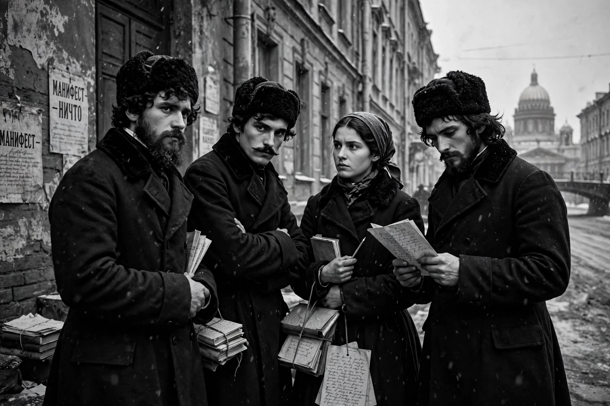

Russian nihilism was a philosophical, cultural and revolutionary movement in the Russian Empire during the late 19th century. It rejected established authority, religion, morality and social norms, advocating instead science, materialism, utilitarianism and radical social change.

| Era | 1860s–1880s |
|---|---|
| Region | Russian Empire |
| Key figures | Dmitry Pisarev, Nikolay Chernyshevsky, Sergey Nechayev |
The term was popularised by Ivan Turgenev's 1862 novel Fathers and Sons, whose protagonist Eugene Bazarov declares himself a nihilist who respects nothing and takes a critical view of everything. The movement arose among educated youth frustrated by serfdom, autocracy and the slow pace of reform after the Crimean War.
Nihilists promoted atheism, Darwinism, women's emancipation, communal living and the rejection of art for art's sake. Dmitry Pisarev argued for useful knowledge and the liberation of the individual. Nikolay Chernyshevsky's novel What Is to Be Done? (1863) became a blueprint for a new way of life.
Some nihilists turned to propaganda and terrorism. Sergey Nechayev's Catechism of a Revolutionary advocateded amoral dedication to revolution. Groups such as Narodnaya Volya (People's Will) assassinated Tsar Alexander II in 1881, prompting repression that largely ended the movement as a distinct force, though it influenced later Russian populism and Bolshevism.